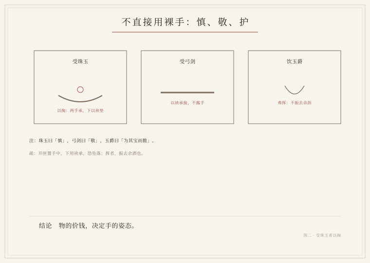

曲礼上 · 一·九十五 · 第 95 课
受珠玉，用两手掌捧；受弓剑，用衣袖承接；饮玉爵，不挥去余酒。三事皆一「慎」字：贵重之物，手不敢直接承。
说什么事：受珠玉者以掬；受弓剑者以袂；饮玉爵者弗挥。
落在哪一层：仪，兼及敬。所护者物，亦护授者之心。
为何编在此位：上节讲执献，此节讲受。执与受相承，献遗之仪至此一段收束。
【经】受珠玉者以掬，受弓劍者以袂，飲玉爵者弗揮。
【注】慎也，掬手中。敬也。為其寶而脆。
掬 注「掬手中」；疏「掬谓手中也」，《释文》「两手曰掬」。两手相合而承。
以袂 袂，衣袖。疏「不露手取之，故用衣袂承接之，以为敬也」。
玉爵 疏「玉爵，玉杯也」。
弗挥 注「为其宝而脆」；疏「挥，振去余也」。饮毕不振杯以去余沥。
挥之证 疏引《左传》「奉匜沃盥，既而挥之」，以证挥为振去余。
受珠玉之法 疏「若受之，开匣而出，置在手中，下用袂承之，恐坠落也」。
受珠玉，用两手掌捧；受弓剑，用衣袖承接；饮玉爵，不挥振以去余酒。
一节三句，都在「不直接用裸手」。珠玉怕坠，故以两掌为盘、以袂为垫；弓剑怕手污，故以袂承；玉爵怕碰，故不挥。礼在此处算得很细：物的价钱，决定了手的姿态。
第一层 慎 注于珠玉曰「慎也」。宝重之物，一坠即碎，故两手为承。
第二层 敬 注于弓剑曰「敬也」。不露手取，是不以裸手触人所赠。
第三层 宝而脆 注于玉爵曰「为其宝而脆」。挥是振去余沥，玉薄则易损。
第四层 袂之为用 疏于珠玉亦云「下用袂承之」。袂在此不是衣袖之饰，是一件随身的承接之具。
与今日何干 接人递来的瓷器、玉器，两只手托底；接人递来的刀剑，用布或纸垫手。此节之心，凡收重礼者皆懂。
| 左 | 右 |
|---|---|
| 受珠玉以掬 | 两手承之，下以袂垫，恐坠 |
| 受弓剑以袂 | 不露手取，以袖承接 |
| 饮玉爵弗挥 | 不振去余沥，玉薄易损 |
| 慎 | 珠玉之注 |
| 敬 | 弓剑之注 |
| 宝而脆 | 玉爵之注 |
画案上三组局部：左为一双合拢的手掌托着一只小玉珠（掌心向上、指并拢），掌下垫一段素色衣袖；中为一段衣袖承接一柄短剑（剑身横卧布上、未触手）；右为一只玉爵正立、爵口平净无余沥、旁无振甩之势。不画人面、不写文字。赭色只在玉爵一道弦纹。
